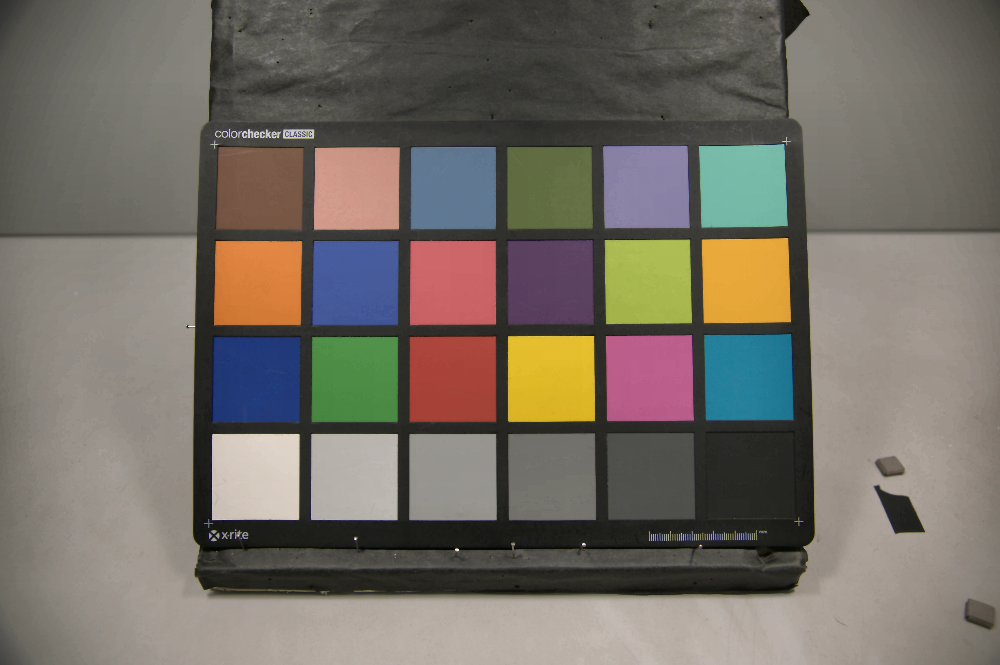

An LLM-backed ISP tuning assistant. Describe an image quality problem in plain language ("the image is too dark, make it 10% brighter") and it returns both an explanation and a machine-readable parameter change for the tuning pipeline. Runs as a terminal chat, a REST endpoint, or a token-streaming websocket, and swaps between a dependency-free rule-based backend and a real Qwen3 model behind one interface.
Camera systems & ISP engineer
I build camera pipelines — from sensor characterization and tuning through to the image quality metrics that decide whether a pipeline is actually good. Most recently I worked on computational photography at Glass Imaging, and before that spent three years on the Qualcomm Spectra ISP team, where I worked on sensor tuning, noise modeling, HDR, and NPU deployment.
I hold an M.S. in Biomedical Engineering from Duke and a B.S. in Bioengineering from UC San Diego. Lately I've been interested in learned RAW→RGB pipelines and in using vision-language models to automate subjective image quality review — two halves of the same question about what parts of image quality a model can actually judge.
Projects
A neural ISP built from scratch: a single U-Net does joint demosaic and denoise on synthetic Bayer RAW, trained with a physically calibrated noise model so one model covers the full ISO range. Beats bilinear demosaic by up to 9.4dB PSNR at low ISO and stays well ahead even against a real classical pipeline (22.1dB vs 18.9dB on Kodak at high ISO), because denoising is joint and RGB instead of a separate luma-only filter.


A fork of fast-openISP used as the classical-pipeline baseline for Neural ISP. Adds a lens-shading-correction module and a chroma-noise-reduction module, and rewrites the brightness/contrast and hue/saturation stages, so the comparison runs against a real DPC/BLC/AWB/demosaic/CCM/ gamma/NLM/BNF pipeline, not just plain bilinear.



An ISO 12233 slanted-edge MTF tool that shows the intermediate steps (edge fit, ESF, LSF, and the resulting MTF curve) instead of collapsing everything to a single MTF50 number.

HydroMinder
A camera-based hydration tracker. A small excuse to work end-to-end on a vision problem where the capture conditions are genuinely uncontrolled.
Research
Detection and image quality assessment, mostly at the point where classical imaging metrics meet learned models.
Preprint, Research Square, 2026
A controlled, scale-by-scale benchmark of YOLOv11 and YOLOv12 (nano through extra-large) on the BCCD v3 dataset. Mean accuracy is nearly identical between the two generations overall, but McNemar's test shows YOLOv12 wins at nano scale, YOLOv11 wins at medium and large, and they converge at extra-large: YOLOv12 does not uniformly beat its predecessor.
The Lancet Digital Health, 2023
A systematic review of 72 studies (from 17,625 screened) on reidentification risk in wearable-device data. Deidentification alone is not enough: in several studies, recordings as short as one to 300 seconds were sufficient to reidentify a person.
If your watch watched you eat...
Medium, 2023
A walkthrough of training models to detect eating from wearable data: physiological signals from an Empatica E4, logistic regression versus a small neural network, with the neural net reaching 98% accuracy.
Photography
Occupational hazard. Replace this with a few frames you actually like, or delete the section.

Add a short line here about what you shoot, and link out to a gallery or Flickr if you keep one.